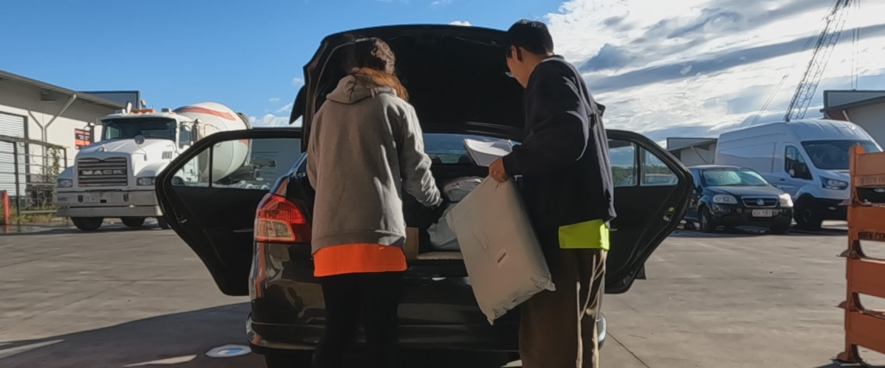
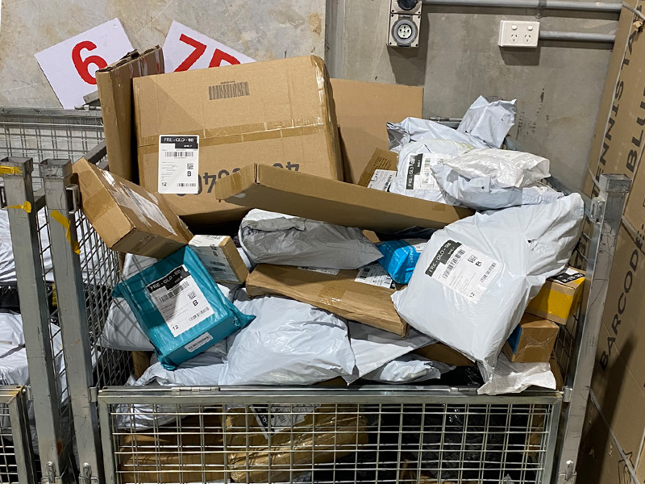
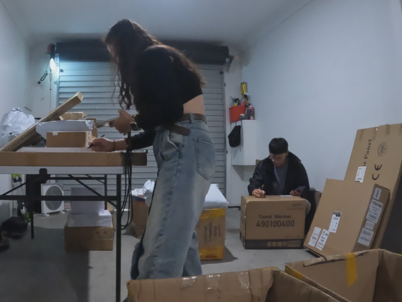
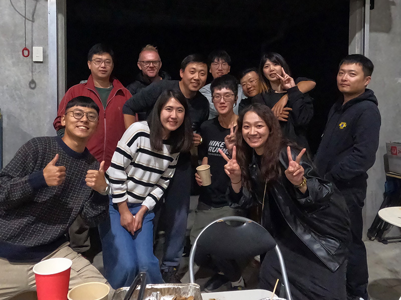
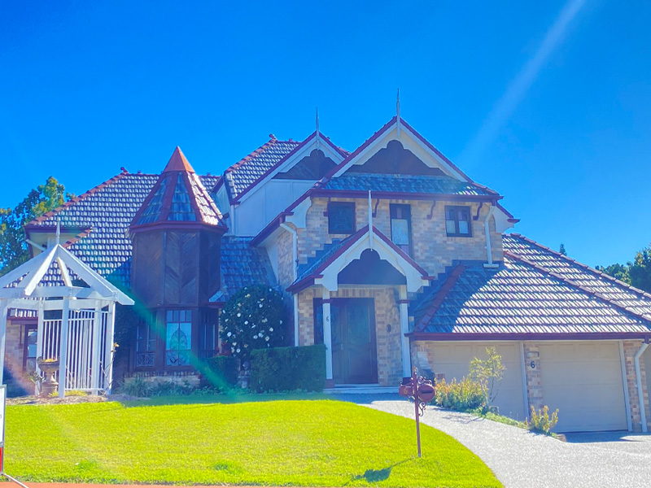
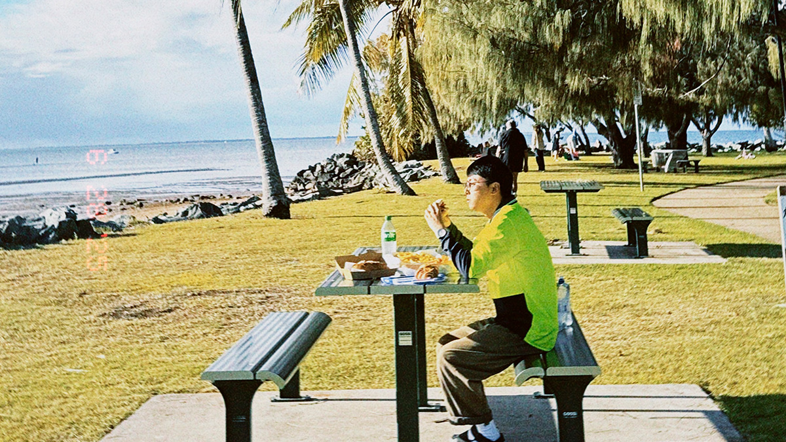

140 小時，穿梭大街小巷的送貨記錄
基本資訊
工作類型
送貨司機（兼職）
地點
North Lakes, QLD
薪資制度
按件計酬 AU$2／件
期間
2025/07 – 2025/10
累積時數
~140 hrs
總收入
~AU$2,200
01
2025 年的冬季草莓季，農場的收成狀況並沒有預期中理想，工作時數也遠遠不如 2024 年。有時候一個星期甚至只有 18 個小時的工作量，但為了完成澳洲打工度假的集簽天數，我也沒有辦法輕易離開農場，只能想辦法尋找其他兼職工作，來補足收入。
剛好透過房東的介紹，我意外得到了一份送貨司機的工作。主要負責配送 SHEIN、Temu、Amazon，以及一些私人包裹。就這樣，我開始了農場與送貨工作兩邊跑的生活。
老闆是一對中國與台灣籍的夫妻，人都非常好。因為我沒有辦法固定送貨時間，通常都是早上在農場工作到 10、11 點左右，下班後再打電話詢問老闆今天有沒有貨可以配送。
工廠位於 North Lakes，配送範圍其實相當廣，從 Sunshine Coast 一直到 Gold Coast 都有可能需要配送。不過，因為我的車子不大，是一台 Toyota Yaris，所以老闆也會特別幫我挑選包裹數量比較少、距離不會太遠的配送區域。我大部分時間都是在 North Lakes 附近活動，曾經跑過 Lawnton、Mango Hill、Chermside 等地區。
我覺得這份工作最大的優點就是彈性非常高，不需要固定排班，有空的時候就可以去跑配送，對於當時還需要在農場工作的我來說，真的是非常方便。
02
我們的薪資是採取按件計酬，一個包裹 AUD $2。
不過，並不是每一個拿到手上的包裹都能算錢。如果遇到地址錯誤、收件資訊有問題，或是其他原因導致無法成功配送，就必須將包裹帶回工廠，這樣的包裹就不會計算薪資。
而且，在真正開始送貨之前，還有一連串的前置作業需要完成：
完成所有準備工作後，就可以正式上路了。抵達目的地後，將包裹放在信箱或住家門口，再用手機拍照並上傳到系統，這樣就完成一筆配送。
~140
累積工時（小時）
AU$2,200
總收入（約）
$15.71
實際平均時薪
雖然表面上看起來一個包裹有 AUD $2 的收入，但實際上還需要考慮許多沒有計薪的準備時間，以及無法成功配送的包裹。這也是我覺得按件計酬工作很重要的一點：不能只看每個包裹能賺多少，還必須計算整個工作流程所花費的時間。


03
剛開始的時候，我和朋友決定兩個人一起合作，分工完成配送工作。一個人負責開車，另一個人負責下車拿包裹、尋找收件地址、放置包裹以及拍照上傳。
聽起來很簡單，但實際上每個環節都需要緊密配合。當司機開車前往下一個目的地時，負責跑腿的人就要先把下一個包裹準備好，開啟配送系統，確認地址與拍照頁面。而司機也必須趁著等待的空檔，提前設定好下一個導航路線。理想的狀態就是車子一停下來，跑腿的人馬上拿著包裹下車，完成放置與拍照；而司機則準備好下一個目的地，兩個人幾乎沒有任何空檔。
我們當時甚至還做了一些數據測試。以當時澳洲基本時薪 AUD $24 來計算，兩個人一個小時至少需要賺到 AUD $48，才相當於各自去做一份基本時薪的工作。而一個包裹是 AUD $2，所以我們平均每小時至少要配送 24 個包裹，才能達到這個標準。
我們兩個人最好的紀錄，曾經在一個小時內送出 26 個包裹。不過，那次剛好有好幾位住在同一個社區的居民同時收到包裹，所以不需要花額外的時間開車前往不同地點，才有辦法達到這樣的速度。
也因為這樣，我們慢慢發現，送貨這份工作並不是單純比誰開車快，而是如何安排路線、如何分配工作，以及如何在有限的時間內完成更多配送。
04
雖然這份工作有時候真的很累，但我很喜歡這裡的工作氣氛。身邊的同事大多已經送貨一段時間，每個人都有自己的一套經驗。有人很擅長安排配送路線，有人知道怎麼把最多的包裹塞進車子裡，也有人很懂得如何節省每一分鐘的時間。大家都很樂意分享自己的小技巧，完全不會藏私。
老闆也非常親切，偶爾還會舉辦免費的烤肉或火鍋聚會，讓大家一起吃飯聊天。我覺得這裡的工作氛圍很好，雖然大家每天都忙著送貨，但彼此之間的感情也相當不錯。
老實說，一開始我以為這會是一份非常無聊的工作。每天就是拿著包裹、開車、找地址、拍照，再前往下一個地方，感覺完全就是一場與時間賽跑的遊戲。但後來我才發現，這份工作意外地讓我看見了許多平常不會注意到的風景。
因為配送範圍的關係，我們經常會開進一些比較冷門的住宅區，甚至是一般觀光客不太會去的地方。有時候會經過非常漂亮，卻幾乎沒有人的海邊；有時候會看到設計得很有特色的庭院，或是外觀非常漂亮的房子。
每當看到這些地方，我總是會忍不住多看幾眼，甚至一邊開車一邊想像，如果未來有一天自己也能在澳洲擁有一間房子，希望它會是什麼樣子。
除此之外，這份工作也大幅提升了我的駕駛能力，以及使用 Google Maps 規劃路線的熟練度。從一開始還需要花時間確認每個路口，到後來可以很自然地判斷方向、安排路線，甚至在不熟悉的地方也能保持冷靜。現在回頭想想，這段經歷對我後來在澳洲的生活幫助真的很大。即使之後需要一次開上六個小時的長途車程，也不再像以前那樣感到緊張或有壓力。


05
當初只是因為農場工作時數不足，想找一份兼職來增加收入，沒想到這份送貨工作卻帶給我許多意料之外的收穫。
除了賺取額外收入，也讓我認識了一群很棒的同事，走進了許多陌生的地方，更重要的是，讓我慢慢建立起在澳洲獨自開車的信心。
或許旅行不一定要安排目的地，有時候只是為了完成一份工作，也能讓自己看見不一樣的風景。
